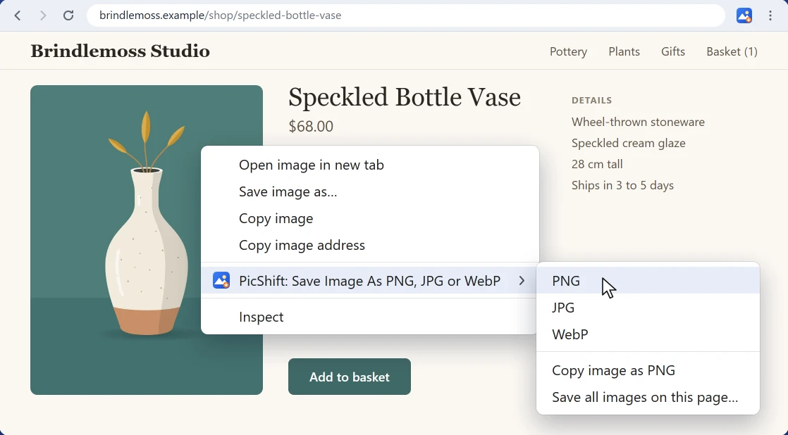
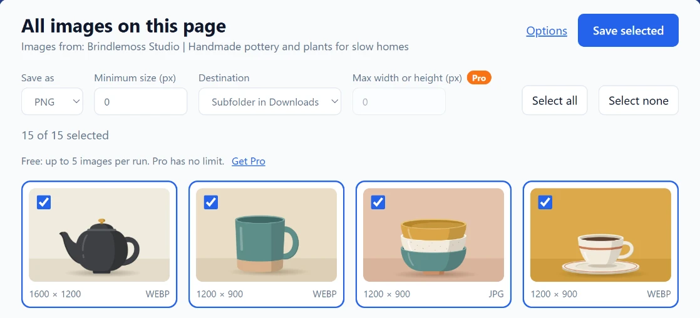
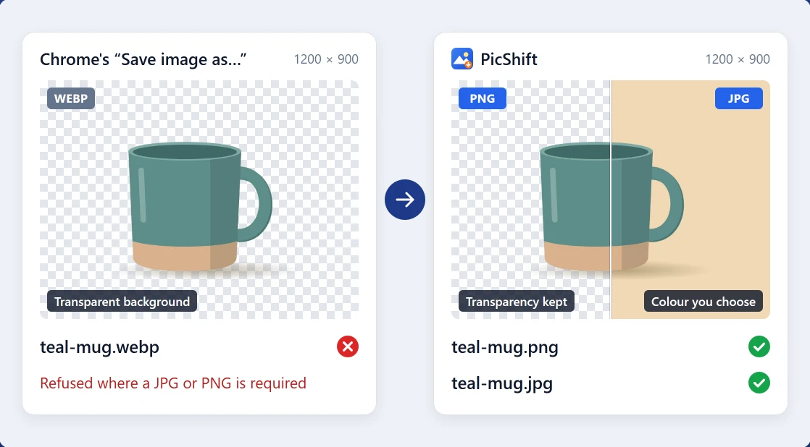

- All extensions
- PicShift
 PicShift for images on any website
PicShift for images on any website
Save any image, even WebP and AVIF, as PNG or JPG
Right-click an image, choose PNG, JPG or WebP, and PicShift converts it on your own computer. No more WebP files your editor refuses to open, and no more AVIF images an upload form rejects.
In store review, available soon
Free: unlimited single images. Pro: every image on a page at once, $6.99 one-time.
Need a PNG today? Three other ways to save WebP and AVIF as PNG or JPG

How it works
Right-click any image
On any website, just as you would to save it the usual way.
Choose PicShift, then a format
PNG, JPG or WebP. “Copy image as PNG” puts it on the clipboard instead.
Find it in Downloads
At its original pixel size, named the way you set it.
Every image on a page, in one go
Open the PicShift panel to see all the images on a page with their sizes. Skip the small ones, tick what you want, and convert the whole selection at once.
- The free plan saves up to 5 images per batch, into a folder
- Pro has no limit, and can save the batch as one ZIP file
- Pro resizes on save and numbers the file names

WebP in, PNG or JPG out
Many apps, older editors and upload forms still refuse WebP and AVIF. PicShift gives you the same picture in a format they accept, at the same pixel size.
- Opens WebP, AVIF, PNG, JPG, GIF, SVG, BMP and ICO
- You choose the JPG and WebP quality
- You pick the background colour when a transparent image becomes a JPG

Privacy
- Touches an image only when you ask
- It can read images on any site, because the one you right-click may be hosted anywhere, but it fetches nothing until you pick a menu item.
- Converted on your computer
- Images are converted inside your browser and saved to your Downloads folder. They are never uploaded.
- No extras, readable code
- No account, analytics, ads or affiliate links, no changes to the pages you visit, and the code is not minified or obfuscated.
Pricing
Single images are free for good, with no “5 free uses” counter, now or later. Pro is a one-time purchase for batch work.
Free
$0
No limit on single images.
- Save as PNG, JPG or WebP from the right-click menu
- Copy any image as PNG
- Quality, background colour and file-name settings
- Batches of up to 5 images
In store review, available soon
Pro
$6.99one-time
No subscription.
- Batches with no limit
- Save a batch as one ZIP file
- Resize on save to a maximum width or height
- File-name templates with a counter
- Everything in Free
In store review, available soon
Install it, then choose Get Pro in the PicShift panel. Checkout by Stripe; 14-day money-back guarantee.
Questions about PicShift
Is PicShift really free?
Yes. Saving single images is free and unlimited, with no counter. Pro is a one-time $6.99 for batches, ZIP files and resizing.
Why does it ask to read data on all websites?
Because the image you right-click can be hosted on any domain, often a different one from the page you are on, and PicShift has to fetch that file to convert it. It touches an image only when you pick a menu item or open the batch panel.
Does it upload my images?
No. Images are converted in your browser and saved straight to your Downloads folder.
Does it change the size of the image?
No. The picture keeps its original pixel size, unless you use Pro’s resize on save.
What happened to “Save image as Type”?
Google removed it from the Chrome Web Store and switched it off in Chrome in March 2026. Our guide explains what was reported and what you can use now.
Get a PNG or JPG out of any web image
Single images are free, with no limit and no account.
In store review, available soon